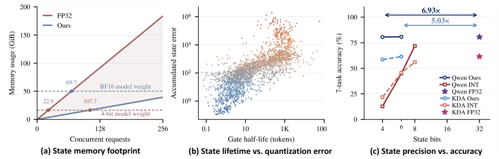
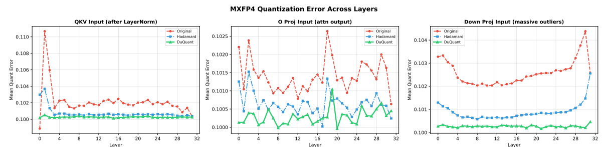

Yao Bingchen 姚秉辰
Welcome to my homepage!
I am a third-year undergraduate student at Zhejiang University, advised by Prof. Ying Wei.
My current research interests are Efficient Machine Learning and Large Language Models.
Education
Zhejiang University
Undergraduate student
2024–Present
Selected Publications
2026